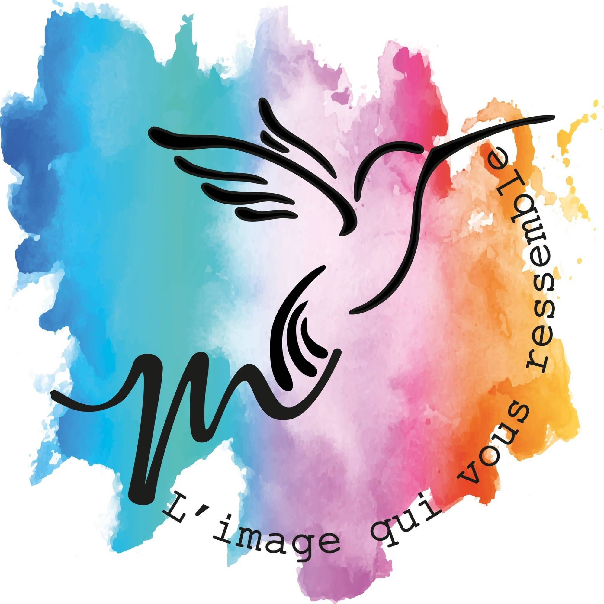
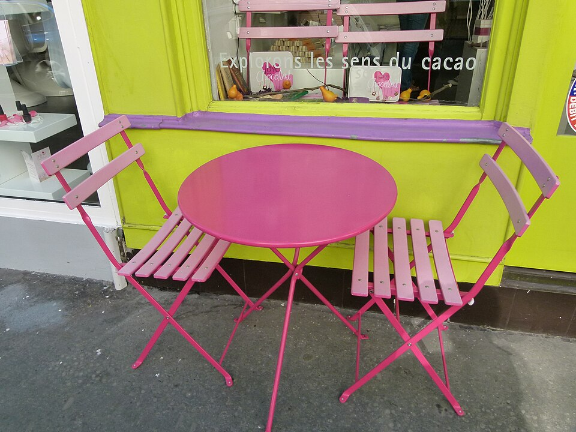
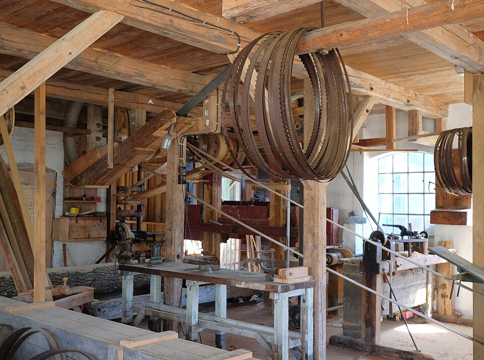
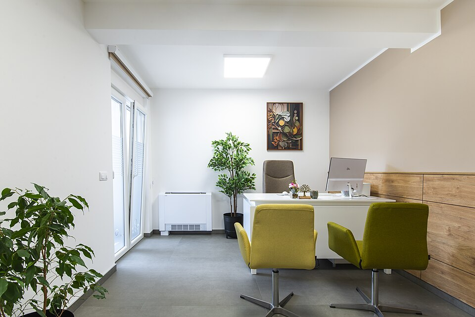
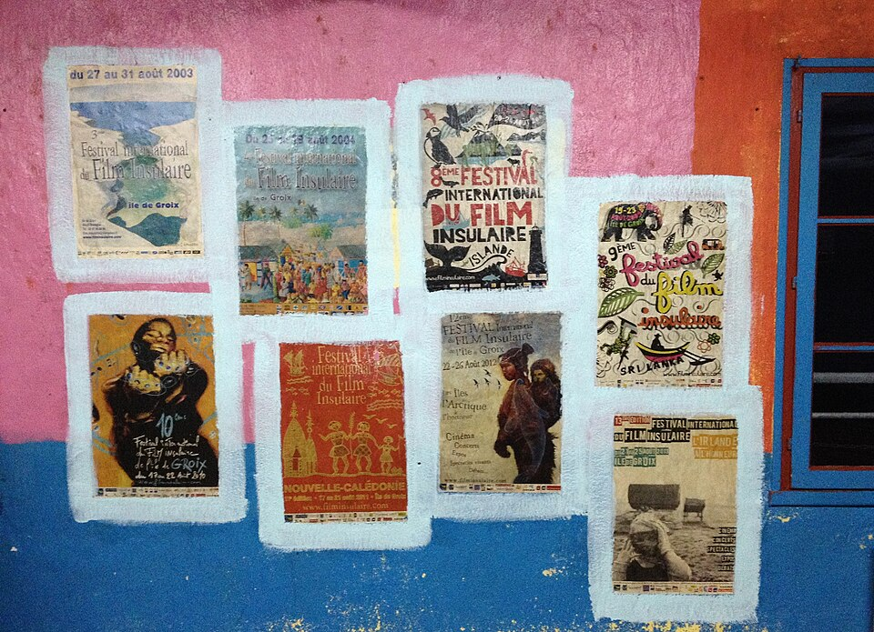

Identité de marque
Logo, déclinaisons, palette de couleurs, typographies et règles d'usage réunies dans une charte claire, utilisable par n'importe quel imprimeur.
Votre image de marque travaille-t-elle vraiment pour vous ? Infographiste et chef de projet depuis plus de sept ans, je conçois des solutions 360° et sur mesure : logos, menus, cartes et supports de communication. Une ligne graphique cohérente, du premier crayonné à la pose de l'enseigne.

Un logo seul ne suffit pas. Ce qui installe une marque, c'est la répétition : les mêmes couleurs, la même typographie et le même ton sur votre devanture, votre carte, votre page Instagram et jusqu'à votre devis.
Tout ce qui porte votre nom, conçu au même endroit et dans la même logique.
Logo, déclinaisons, palette de couleurs, typographies et règles d'usage réunies dans une charte claire, utilisable par n'importe quel imprimeur.
Cartes de restaurant, menus du jour, ardoises, sets de table. Une mise en page lisible et hiérarchisée, qui met vos plats — et vos marges — en valeur.
Cartes de visite, flyers, affiches, kakémonos, brochures, packaging. Des fichiers préparés aux normes de l'imprimeur, fonds perdus et profils compris.
Vitrines, adhésifs, panneaux, habillage de véhicule. Des visuels calibrés pour le grand format et pour le poseur qui les installera.
Bannières, gabarits de publication, carrousels et visuels de campagne. Vous gardez la main : les modèles restent réutilisables mois après mois.
Chef de projet autant qu'infographiste : je coordonne imprimeurs, poseurs et prestataires, je vérifie les bons à tirer et je tiens les délais.

J'accompagne votre réussite avec Grafycom. Plus de sept ans à concevoir des identités visuelles, à préparer des fichiers d'impression et à coordonner des projets pour des commerces, des artisans et des associations de la région.
Beaucoup de dirigeants arrivent avec la même phrase : « je n'y connais rien en graphisme ». C'est normal, ce n'est pas votre métier. Mon rôle est de traduire ce que vous avez en tête en quelque chose de visible — sans jargon, sans vous faire sentir à côté de la plaque.
Un échange gratuit pour comprendre votre activité, vos clients et ce qui coince aujourd'hui dans votre image.
Un devis détaillé, puis des pistes créatives argumentées — pas trois variantes au hasard.
Les allers-retours prévus au devis, jusqu'à ce que le résultat vous ressemble vraiment.
Fichiers sources, déclinaisons, et le suivi d'impression ou de pose si vous le souhaitez.
Commerces, artisans, restaurateurs, professions libérales, associations, TPE et PME des Pyrénées-Orientales — et partout ailleurs en visio.

Cartes, menus, enseignes, habillage de terrasse, visuels de saison.

Logo, marquage de véhicule, panneaux de chantier, plaquettes commerciales.

Une image sobre et rassurante : cabinet, plaque, papeterie, prise de rendez-vous.

Affiches, programmes, kakémonos, communication d'un festival ou d'une saison.
Le prix dépend du nombre de pistes créatives, des déclinaisons demandées (couleur, noir et blanc, format carré pour les réseaux, version pour la broderie ou le grand format) et de la charte qui l'accompagne. Plutôt qu'un tarif affiché au hasard, je vous envoie un devis détaillé après un premier échange : vous voyez exactement ce que couvre chaque ligne.
Comptez en général deux à quatre semaines pour une identité visuelle complète, quelques jours pour un support isolé comme un flyer ou un menu. Le vrai facteur, c'est la disponibilité de vos retours : un projet avance à la vitesse des allers-retours.
Oui. À la livraison, vous recevez les fichiers d'exploitation (PDF prêts à imprimer, PNG et JPG pour le web) et les fichiers sources vectoriels. Vous n'êtes jamais prisonnier de votre prestataire.
Je suis installée à Perpignan et je me déplace dans tout le département : Canet, Argelès, Céret, Thuir, Prades, Le Barcarès… Pour les projets plus lointains, la visio et le partage de fichiers fonctionnent très bien.
Oui, si vous le souhaitez. Je travaille avec des imprimeurs et des poseurs de la région, je prépare les fichiers à leurs normes, je vérifie les bons à tirer et je suis la production jusqu'à la livraison. Vous pouvez aussi garder votre propre imprimeur : les fichiers sont prévus pour.
Oui. L'accompagnement se fait en français comme en espagnol, ce qui est pratique pour les entreprises transfrontalières et pour les supports destinés à une clientèle catalane ou espagnole.
Un logo à refaire, une carte à remettre au propre, une communication à reprendre de zéro ? Le premier échange est gratuit et sans engagement : on regarde ensemble ce dont vous avez vraiment besoin.